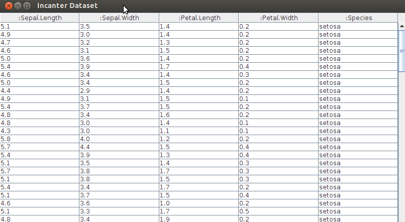
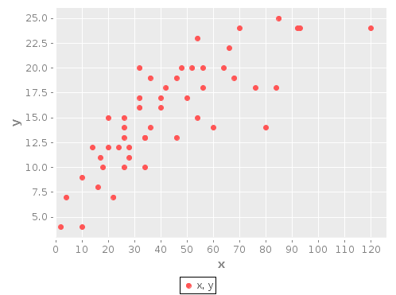
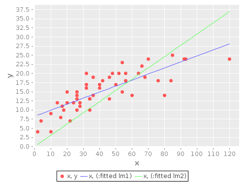

incanter/incanter-core
incanter/incanter-zoo
incanter/incanter-io
incanter/incanter-mongodb
incanter/incanter-sql
incanter/incanter-excel
incanter/incanter-charts
incanter/incanter-latex
incanter/incanter-pdf
incanter/incanter-svg
incanter -> everything!
sel, view, …
first, map, …
incanter.main=> (to-dataset [[1 2] [3 4] [5 6]]) | :col-0 | :col-1 | |--------+--------| | 1 | 2 | | 3 | 4 | | 5 | 6 | incanter.main=> (def dA (to-dataset [{:a 1 :b 2} {:a 1 :b 2}])) | :a | :b | |----+----| | 1 | 2 | | 1 | 2 | incanter.main=> (col-names dA) [:a :b] incanter.main=> ($map #(+ %1 %2) [:a :b] dA) (3 3) incanter.main=> (conj-cols dA ($map #(+ %1 %2) [:a :b] dA)) | :a | :b | :col-0 | |----+----+--------| | 1 | 2 | 3 | | 1 | 2 | 3 |
incanter.main=> (def A (matrix [[1 2 3] [4 5 6] [7 8 9]])) #'incanter.main/A incanter.main=> A A 3x3 matrix ------------- 1.00e+00 2.00e+00 3.00e+00 4.00e+00 5.00e+00 6.00e+00 7.00e+00 8.00e+00 9.00e+00 incanter.main=> (first A) A 1x3 matrix ------------- 1.00e+00 2.00e+00 3.00e+00 incanter.main=> (mult A 2) A 3x3 matrix ------------- 2.00e+00 4.00e+00 6.00e+00 8.00e+00 1.00e+01 1.20e+01 1.40e+01 1.60e+01 1.80e+01
incanter.io/read-dataset to load data in CSV format (incanter-io module)
incanter.excel/read-xls (incanter-excel module) to import one or all sheets from
Excel file
incanter.mongodb/fetch-dataset (incanter-mongodb module) - loads data from
MongoDB into Incanter's dataset
incanter.sql/read-dataset (incanter-sql module) converts results of ClojureQL
query into dataset
incanter.datasets/get-dataset (incanter-io module) returns built-in dataset
:flow-meter
:cars
:co2
:filip
:math-prog
incanter.main=> (def iris (get-dataset :iris)) #'incanter.main/iris incanter.main=> (view iris) #<JFrame javax.swing.JFrame....>

incanter.io/save - multimethod for saving different objects
incanter.excel/save-xls saves one or more datasets in Excel file
incanter.mongodb/insert-dataset stores given dataset in MongoDB
incanter.sql/insert-dataset stores dataset in specified table
incanter.latex/to-latex converts matrix into LaTeX string to print it
sel - working horse to getting subset of data from datasets, matrices, …
:cols, :rows, :filter, :except-cols, :except-rows
$ selects only specified columns for given dataset (or $data)
query-dataset - filter column(s) data according to given criteria:
$where - alias, but can work without explicit data
(def iris (get-dataset :iris)) (sel iris :cols [0 2]) (sel iris :rows (range 10) :cols (range 2)) (sel iris :except-cols 0) (sel iris :filter #(> (nth % 2) 4)) (with-data iris (view ($ [:not :Petal.Width :Petal.Length]))) (def cars (get-dataset :cars)) (view (query-dataset cars {:speed 10})) (view (query-dataset cars {:speed {:$in #{17 14 19}}})) (view (query-dataset cars {:speed {:$lt 20 :$gt 10} :dist {:$lt 30 :$gt 10}})) (view (query-dataset cars {:speed {:$fn #(> (log %) 3)}})) (view ($where {:speed 10} cars))
$group-by returns map of datasets with uniq values from given column(s) as keys
$rollup returns dataset with function applied to given column after grouping
$order sorts dataset by specified column(s)
$join does right join of datasets on specified column(s)
$map - performs function on given column(s) and return new column
matrix-map - apply function to all cells in matrix
($group-by :Species iris) {{:Species "setosa"} | :Species | :Petal.Width | :Petal.Length | :Sepal.Width | :Sepal.Length | |----------+--------------+---------------+--------------+---------------| | setosa | 0.2 | 1.4 | 3.5 | 5.1 | ....
($rollup :mean :count [:hair :eye] hair-eye-color) | :eye | :hair | :count | |-------+-------+--------| | green | black | 5/2 | | hazel | red | 7 | | green | blond | 8 |
incanter.core - basic mathematical functions (work with matrices & normal numbers)
incanter.stats - core statistical library with basic functions.
incanter.distributions - Probability functions for common distributions
incanter.censored - for work with 'censored' (truncated) distributions
incanter.optimize - optimization of given functions
incanter.bayes - basic Bayesian modeling and inference
incanter.som - Self-Organizing-Map Neural Network
incanter.interpolation - interpolation and approximation of collection of points
incanter.main=> (get-categories [:eye :hair] (get-dataset :hair-eye-color)) (#{"green" "hazel" "brown" "blue"} #{"red" "brown" "blond" "black"}) incanter.main=> (correlation [5 6 7 8] [8 9 10 11]) 1.0000000000000002 incanter.main=> (let [r (simple-regression [2 4] [1 3])] #_=> (predict r 2)) 3.0 incanter.main=> (cosine-similarity [2 4 3 1 6] #_=> [3 5 1 2 5]) 0.938572618717412 incanter.main=> (def points [[0 0] [0 1] [1 1] [3 5] [2 9]]) #'incanter.main/points incanter.main=> (def cubic (interpolate-parametric points :cubic)) #'incanter.main/cubic incanter.main=> (cubic 0) (0.0 0.0) incanter.main=> (cubic 1) (2.0 9.0) incanter.main=> (cubic 0.5) (1.0 1.0)
incanter-latex module)
(use '(incanter core stats io datasets charts)) (def cars (get-dataset :cars)) (def y (sel cars :cols :speed)) (def x (sel cars :cols :dist)) (def plot1 (scatter-plot x y :legend true)) (view plot1)

(def lm1 (linear-model y x)) (add-lines plot1 x (:fitted lm1)) (def lm2 (linear-model y x :intercept false)) (add-lines plot1 x (:fitted lm2)) (view plot1)

incanter.infix
incanter.symbolic (from SICP)
incanter.main=> ($= 7 + 8 - 2 * 6 / 2) 9 incanter.main=> ($= [1 2 3] <*> (trans [1 2 3])) A 3x3 matrix ------------- 1.00e+00 2.00e+00 3.00e+00 2.00e+00 4.00e+00 6.00e+00 3.00e+00 6.00e+00 9.00e+00 incanter.main=> (deriv (* (* x y) (+ x 3)) x) (+ (* (+ x 3) y) (* x y)) incanter.main=> (deriv (pow x 3) x) (* 3 (pow x 2))